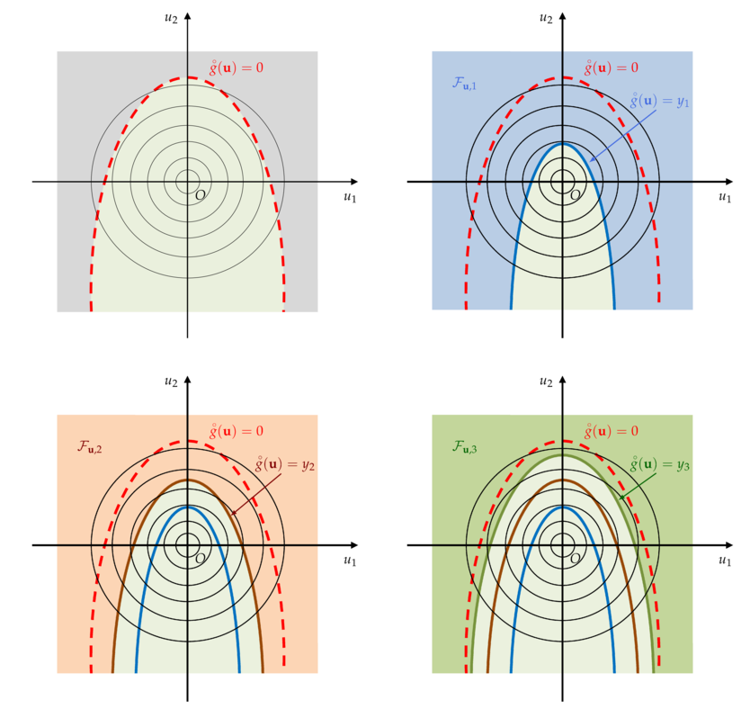

Subset sampling method¶
Acknowledgement¶
The text and the figures thereafter come from Vincent Chabridon’s PhD thesis, Reliability-oriented sensitivity analysis under probabilistic model uncertainty, Application to aerospace systems (2018) in the chapter 3: Rare event probability estimation. This paragraph has been edited with the kind permission of its author.
Presentation¶
Subset sampling (abbreviated to SS) belongs to the family of variance reduction techniques. However, due to its mathematical formulation, several variants have been proposed in different scientific communities. For example, one can cite, among others, the pioneering work of Kahn and Harris (1951) (called splitting) in the field of neutronics physics, the study of Glasserman et al. (1999) (called multilevel splitting) from the branching processes point of view, the development by Au and Beck (2001) (called subset simulation) for reliability assessment purpose or finally, the theoretical studies from the Markov processes point of view by Cérou and Guyader (2007) (called adaptive multilevel splitting) and Cérou et al. (2012) from the sequential Monte Carlo point of view.
All in all, these splitting techniques rely on the same idea: a rare event should be “split” into
several less rare events, these events corresponding to some “subsets” containing the true failure
set. Thus, the probability associated to each subset should be stronger, and consequently, easier
to estimate.
As an example, on can illustrate this by considering that a failure probability
 of the order of
of the order of  can be split into a product of
can be split into a product of
 terms of probability
terms of probability  .
In the following, for the sake of conciseness, only the formulation proposed by Au and Beck (2001) is discussed.
.
In the following, for the sake of conciseness, only the formulation proposed by Au and Beck (2001) is discussed.
Formulation¶
The formulation of SS proposed by Au and Beck (2001) is
derived in the  -space (standard space) and is the one presented hereafter.
-space (standard space) and is the one presented hereafter.
Let  denote a failure event sufficiently rare, where
denote a failure event sufficiently rare, where  is the limit state function (LSF) in the standard space.
is the limit state function (LSF) in the standard space.
One can consider a set of intermediate nested events  with
with  such that
such that  .
Applying chain rule for conditional probabilities, one gets:
.
Applying chain rule for conditional probabilities, one gets:
![\begin{aligned}
p_f {} & = \mathbb{P}(E_m) \\
{} & = \mathbb{P}(E_m | E_{m-1}) \mathbb{P}(E_{m-1}) \\
{} & = \mathbb{P}(E_m | E_{m-1}) \mathbb{P}(E_{m-1}) \\
{} & = \prod_{s=1}^m p_s
\end{aligned}]()
where  and
and  for
for  .
From this collection of nested failure events, one can define a set of intermediate nested failure domains (which are the so-called “subsets”) such that:
.
From this collection of nested failure events, one can define a set of intermediate nested failure domains (which are the so-called “subsets”) such that:
![\mathcal{F}_{u,s} = \{ u \in \mathbb{R}^d | \overset{\circ}{g}(u) \leq y_s \}, s=1,\hdots,m]()
where  belongs to a set of decreasing intermediate thresholds such that
belongs to a set of decreasing intermediate thresholds such that  (i.e., corresponding to the true LSF) and
(i.e., corresponding to the true LSF) and

These thresholds are estimated as  quantiles from the set of
quantiles from the set of  samples of LSF outputs
samples of LSF outputs
![\mathcal{h}_{u,s} = \{ \overset{\circ}{g}(U^{(j)}) \}_{j=1}^N]() with
with ![\alpha_{SS} \in ]0, 1[]() the rarity parameter.
Consequently, one can notice that
the rarity parameter.
Consequently, one can notice that
![\mathcal{F}_{u} = \mathcal{F}_{u,m} \subset \mathcal{F}_{u,m-1} \subset \hdots \subset \mathcal{F}_{u,2} \subset \mathcal{F}_{u,1}]()
The underlying mechanism of the SS is illustrated on a two-dimensional example in the following figure.
{kind=link}

Illustration on a two-dimensional example of the SS mechanism in the standard space.
(Top left) The true but unknown limit state surface ; (Top right) First intermediate failure domain  .
(Bottom left) Second intermediate failure domain
.
(Bottom left) Second intermediate failure domain  ; (Bottom right) Third intermediate failure domain
; (Bottom right) Third intermediate failure domain  .¶
.¶
In the first figure (top left), the true, but unknown, limit state surface (LSS) is sketched. Then, one considers successive intermediate nested failure domains
which adaptively evolve towards the true failure LSS (first, second and third intermediate failure domains).
Thus, the rare event estimation problem can be split into a sequence of subproblems with larger probabilities to estimate. For the first level  , the probability reads :
, the probability reads :
![p_1 = \mathbb{P}(E_1) = \mathbb{E}_{\Phi_d} [ \mathbf{1}_{ \mathcal{F}_{u,1} }(U) ]]()
and for :
![p_s = \mathbb{P}(E_s | E_{s-1}) = \mathbb{E}_{\Phi_d(.|E_{s-1})} [ \mathbf{1}_{ \mathcal{F}_{u,s} }(U) ].]()
where  is the usual standard unit Gaussian PDF in dimension
is the usual standard unit Gaussian PDF in dimension  .
.
The associated estimators are given, respectively for ![\{ U_1^{(j)} \}_{j=1}^N \overset{i.i.d.}{\sim} \Phi_d]() by:
by:
![\hat{p_1} = \frac{1}{N} \sum_{j=1}^N \mathbf{1}_{ \mathcal{F}_{u,1} }(U_1^{(j)})]()
and, for ![\{ U_s^{(j)} \}_{j=1}^N \overset{i.i.d.}{\sim} \Phi_d(.|E_{s-1})]() ,
,  , by:
, by:
![\hat{p_s} = \frac{1}{N} \sum_{j=1}^N \mathbf{1}_{ \mathcal{F}_{u,s} }(U_s^{(j)})]()
where denotes the number of samples, supposed to be a constant for each level , and the indicator function satisfies
 if
if  and
and  otherwise.
otherwise.
Basically, the SS estimator for is given by:
![\hat{p}_f^{SS} = \hat{p_1} \prod_{s=2}^m \hat{p_s} \qquad \text{ (estimator) }.]()
Moreover, it appears that the conditional sampling PDF  takes the form:
takes the form:
![\begin{aligned}
\Phi_d(u|E_{s-1}) {} & = \frac{\Phi_d(u) \mathbf{1}_{\mathcal{F}_{u,s-1}}(u) }{ \mathbb{P}(E_{s-1}) } \\
{} & = \frac{\Phi_d(u) \mathbf{1}_{\mathcal{F}_{u,s-1}}(u) }{p_{s-1}}, s=2,\hdots,m \qquad \text{ (auxiliary PDF) }
\end{aligned}]()
As a consequence, if one does want to achieve variance reduction with SS compared to Crude MonteCarlo (and thus, to decrease the computational cost in context of very low failure probability), one should be able to sample sequentially from a quasi-optimal auxiliary PDF.
Such a problem can be addressed by using dedicated algorithms based on the Markov Chain Monte Carlo (MCMC) sampling technique (see, e.g., Robert and Casella, 2004; Asmussen and Glynn, 2007).
For instance, dedicated algorithms such as the standard Metropolis-Hastings (MH) sampler (Metropolis et al., 1953; Hastings, 1970) can be used. In the specific context of SS, the modified Metropolis-Hastings (m-MH) sampler originally proposed by Au and Beck (2001) has been proposed to deal with possible higher-dimensional reliability problems than the ones standard MH algorithm traditionally used.
Concerning the statistical properties of the estimator of  ,
Au and Beck (2001) point out the fact that this estimator is biased due to the
correlation between the intermediate probability estimators
,
Au and Beck (2001) point out the fact that this estimator is biased due to the
correlation between the intermediate probability estimators  for .
Such a correlation comes from the way the m-MH sampler is seeded at each step
(see, e.g., Bourinet (2018) or Dubourg (2011) for more details).
It is also proved that the estimator is asymptotically unbiased (Au and Beck, 2001).
As for the c.v.
for .
Such a correlation comes from the way the m-MH sampler is seeded at each step
(see, e.g., Bourinet (2018) or Dubourg (2011) for more details).
It is also proved that the estimator is asymptotically unbiased (Au and Beck, 2001).
As for the c.v.  , Au and Beck (2001) show that it is bounded such that:
, Au and Beck (2001) show that it is bounded such that:
![\sum_{s=1}^m \delta_{s} \leq \delta^2_{\hat{p}_f^{SS}} \leq \sum_{s_1=1}^m \sum_{s_2=1}^m \delta_{s_1} \delta_{s_2} \qquad \text {(3)}]()
where ![\delta^2_{\hat{p}_f^{SS}} = \mathbb{E} \left[ \left( \frac{\hat{p}_f^{SS} -p_f }{p_f} \right)^2 \right]]() and
and  are the c.v. of
are the c.v. of  , for .
For the sake of concisness, formulas for computing these quantities can be found in Au and Beck (2001) or Bourinet (2018).
, for .
For the sake of concisness, formulas for computing these quantities can be found in Au and Beck (2001) or Bourinet (2018).
The upper bound is established under the assumption of fully-correlated intermediate probability estimators .
Instead of using this upper bound, one can use the lower bound, established
under the assumption of independent probability estimators .
Indeed, although it underestimates the true c.v., it appears that,in practice (see, e.g., Au et al., 2007),
it may give a reasonable approximation and approaches the empirical c.v. obtained by repetitions of the SS algorithm.
Advantages and drawbacks¶
On the one hand, the main advantages of SS in rare event probability estimation are its ability to handle complex LSFs (e.g., highly nonlinear, with possibly multiple failure regions) and to behave better than other techniques regarding the input dimension. Moreover, SS may present some interesting features concerning possible parallelization as exposed in Bourinet (2018). However, in its traditional formulation, SS is not a fully parallel multilevel splitting (Walter, 2015).
On the other hand, SS also presents some potential drawbacks. Firstly, even if SS provides a variance reduction compared to CMC, the number of samples required to achieve convergence may be, in some cases, larger than that required with other Importance Sampling techniques. Secondly, the estimation error is not directly given by an analytical formula (e.g., variance estimators for CMC and IS) but has to be estimated using the bounds provided in the previous inequalities or by repetition.
Thirdly, another intrinsic difficulty of SS is the tuning of parameters (e.g., the fixed
vs. adaptive levels  , the number of samples per step
and other related parameters in the MCMC algorithm) which can be, in
some cases, very influential on the efficiency of the
algorithm. Fourthly, as proved in Au and Beck (2001) and recalled by
Walter (2016, Chap. 1), the SS formulation leads to a biased estimator of .
, the number of samples per step
and other related parameters in the MCMC algorithm) which can be, in
some cases, very influential on the efficiency of the
algorithm. Fourthly, as proved in Au and Beck (2001) and recalled by
Walter (2016, Chap. 1), the SS formulation leads to a biased estimator of .
Other algorithms such as the Last Particle Algorithm (LPA) by Guyader et al. (2011) or the Moving Particles algorithm (MP) by Walter (2015) can be used. A numerical investigation about relative efficiencies of both SS and LPA/MP through the tuning of MCMC parameters has been recently proposed by Proppe (2017).
Fourthly, when input dimension is large, SS may be indirectly affected if the
traditional MH sampler is used as it becomes inefficient in high dimension. Using the m-MH sampler introduced by Au and Beck (2001)
allows one to overcome this difficulty. As an alternative, one could
also use another variant of m-MH as proposed in Zuev and Katafygiotis
(2011).
Finally, as mentioned in Au and Wang (2014) and Breitung (2019), counterexamples (e.g., specific shapes of LSS) can be found to invalidate SS convergence towards the true failure probability. This remark highlights the fact that any insight regarding the physical behavior of the system or about the LSF can be useful for the analyst to avoid dramatic errors in terms of rare event probability estimation.
Remarks¶
As a remark, one can notice that Subset Sampling can be efficiently coupled with surrogate models (Bourinet et al., 2011; Bourinet, 2016; Bect et al., 2017) to assess reliability regarding expensive-to-evaluate computer models. In such a case, possible limiting properties of the surrogate model (e.g., limits concerning the input dimensionality and the smoothness of the LSF) may impact the usual properties of Subset Sampling.
References¶
For any further information about subset/splitting techniques for rare event simulation, the interested reader could refer to the following references
Asmussen and Glynn, 2007, Stochastic Simulation: Algorithms and Analysis
Au and Beck, 2001, Estimation of small failure probabilities in high dimensions by subset simulation
Au et al., 2007, Application of subset simulation methods to reliability benchmark problems
Au and Wang, 2014, Engineering Risk Assessment with Subset Simulation
Bect et al., 2017, Bayesian Subset Simulation
Bourinet et al., 2011, Assessing small failure probabilities by combined subset simulation and Support Vector Machines
Bourinet, 2016, Rare-event probability estimation with adaptive support vector regression surrogates
Bourinet (2018), Reliability analysis and optimal design under uncertainty – Focus on adaptive surrogate-based approaches
Breitung, 2019, The geometry of limit state function graphs and subset simulation: Counterexamples
Caron et al., 2014, Some recent results in rare event estimation
Cérou and Guyader, 2007, Adaptive Multilevel Splitting for Rare Event Analysis
Cérou et al., 2012, Sequential Monte Carlo for rare event estimation
Chabridon, 2018, Reliability-oriented sensitivity analysis under probabilistic model uncertainty, Application to aerospace systems
Dubourg, 2011, Adaptive surrogate models for reliability analysis and reliability-based design optimization
Glasserman et al., 1999 , Multilevel splitting for estimating rare event probabilities
Guyader et al., 2011, Simulation and Estimation of Extreme Quantiles and Extreme Probabilities
Hastings, 1970, Monte Carlo sampling methods using Markov chains and their applications
Kahn and Harris, 1951, Estimation of particle transmission by random sampling
Lagnoux, 2006, Rare event simulation
Metropolis et al., 1953, Equation of state calculations by fast computing machines
Morio et al., 2014, A survey of rare event simulation methods for static input-output models
Proppe, 2017, Markov chain methods for reliability estimation
Robert and Casella, 2004, Monte Carlo Statistical Methods
Walter, 2015, Moving particles: A parallel optimal multilevel splitting method with application in quantiles estimation and meta-model based algorithms
Walter, 2016, Using Poisson processes for rare event simulation
Zuev and Katafygiotis, 2011, Modified Metropolis-Hastings algorithm with delayed rejection